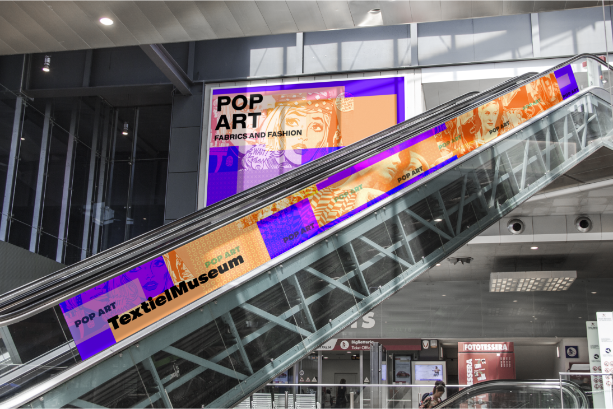
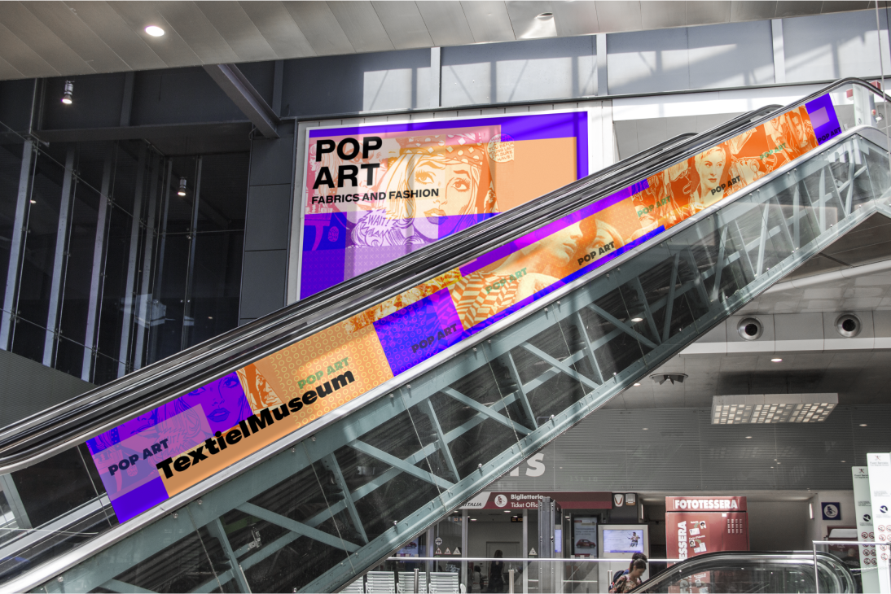

Overview
A microsite for the event Pop Art Fabrics and Fashion at the textile museum. From a visual identity through digital and physical assets.
roles
Visual Designer, Content & Research, Prototyping, Art Direction, Slide Design
team
Trisha Ciocan, Sofia Tan, Asher D, Chloe Velasquez
duration
March – April 2023
tools
Figma, Photoshop, Protopie(initial prototyping)
Introduction
Creating a visual identity based on design precedents such as wolfgang weingart, raw color, and ellen lupton. Ultimately convert the visual identity into a microsite for the selected client (textielmuseum of tilburg). Through numerous exploration and experimentations using type and imagery, we proposed a set of visual artifacts for the event: Pop Art – Fabrics and Fashion.
Research
Analysis of Wolfgang Weingart:
Before designing the graphic assets, we delved into our precedent designer Wolfgang Weingart to find inspiration and a starting point for a set of posters. The team researched into the designer and his works to extract key design qualities and principles that will be used for the design explorations. We extracted 5 key qualities and principles:
Key Qualities & principles extracted:
01
Overlapping geometric shapes for compositional alignment
02
Motion formed by orientation of axes
03
Gestural techniques for painterly feel
04
Breaking boundaries of enclosed frames
05
Manipulating opacity for unifying imperfection
graphical assets
Graphic Experimentation
Throughout each of the weeks, we were required to create 3 posters along with graphical assets for each of the posters. Based on the qualities and principles we selected, we created posters that fit each of the categories to explore different aspects of our precedent designer.
As one of the main designers in the team, I heavily contributed in designing each of the graphic assets. The goal within each visual composition was to bring out the pop art essence without falling into the cliché of distinct pop art style by applying contemporary features extracted from our secondary precedent designer Raw Color. Each week we experimented our principles to narrow down our options to select one distinct style that had the most potential to be developed into a microsite

**Weekly deliverables: iteration and development process each week building from one to another based on feedback and critique session
digital iterations
Transition to microsite
Analyzing our graphic asset to extract core principle and quality
With our initial explorations of the posters and graphical assets, We extracted the core quality and principle to define our art direction and to drive our concept for the event based on our precedent designer. Ultimately, we focused on overlapping geometric shapes for alignment while breaking the boundaries for a compositional foundation.
Transitioning into digital asset based on the graphic assets
From our final selection of posters, we adapted these elements to appeal to the contemporary audience while translating our line of investigation: breaking the parameters of geometric shapes. We did this through the image treatment, overlapping shapes and patterns, and fusing image and type together to maintain the iconic pop art essence.
Microsite iterations from less expressive to more expressive
Initially we created 3 variations to visualize and test which prototype would have the most potential to be developed further as our final product. Based on the design and the user flow, we eded up selecting the middle design as the functional design lacked the visual interest to capture the viewers and the more expressive site lacked the familiarity, creating errors and confusion in the flow.
final delivery

Final direction: transitioning from graphics to digital
Final Direction
Based on our explorations of the webflow and initial designs, we decided to go with the second option (my design) which was the expressive option. This design had the most potential and expressed our initial style from the graphical explorations. Some of the feedback we received was that this design had a good balance of our earlier explorations and that there were points of interest and the potential to build the micro-interactions.
Art Direction
I developed the concept based on the event topic and how we wanted to transition the conventional pop art style into a contemporary design. To grab each of these elements, I decided to combine the retro and contemporary together.
To express the bold and exotic feature of pop art, I looked into many colour variations to create a palette that could help express the classic pop art essence but with a contemporary twist. Reminiscent of the bright primary colours in pop art, I chose neon colours to bring out the vibrant energy. Each of the colours were chosen to represent the different features of the microsite.
Art direction slide - typography choice
Art direction slide - image treatment & colour palette
digital adaptations
User Flow
User flow chart for each page: (left to right) ticket, itinerary, and artists
Interaction Precedent
To further develop the flexibility of our art direction, we focused the interactions towards the use of overlapping shapes and how to transition them. The challenge was to execute the interactions without overwhelming the users with the amount of content displayed on each page.

interaction precedents
Interaction
The ultimate goal of our concept was to capture the attention from a glance by using bright neon colours to guide the viewers through the content smoothly. Additionally, we wanted to create a unique transition from one page to another using the geometric shaped frames; something simple to convey the information clearly without distraction.
01
Tickets: new pages slide into view keeps details organized and more functional for systemic interaction such as purchasing, creating more seamless interactions and granting the user a sense of reliability and confidence in their actions on the website

ticket page interactions
02
Artists: The interaction allows users to reveal audio-video content, heightening their excitement because it is more enjoyable to invest in a passive activity that stimulates different senses, increasing their desire to attend to experience more

artists page interactions
03
Itinerary: Revealing content with the interaction is a functional way to navigate a calendar, providing a pleasant way to browse unfamiliar events and their details by giving the user a level of control through familiarity

itinerary page interactions
Scenario Walkthrough
Click for the presentation!
conclusion
Reflection
Through these intense 6 weeks, there were many valuable skills I obtained through research and development of the project. With the focus into precedent designers, I was able to have a better understanding of the complexities behind the designer’s process and develop my own principles to drive the art direction for each of the graphical assets.
The project really challenged myself to push for styles I have never tried before and by understanding the process of various designers, I learned to reference the old to develop into a contemporary piece. With weekly deadlines, I was definitely able to strengthen converging and diverging design iterations to quickly produce variations for a better final outcome. Overall, this experience helped expand my creativity by exploring different forms and transitioning between graphic and digital assets while understanding the research and process of building a visual identity for the microsite.
 
